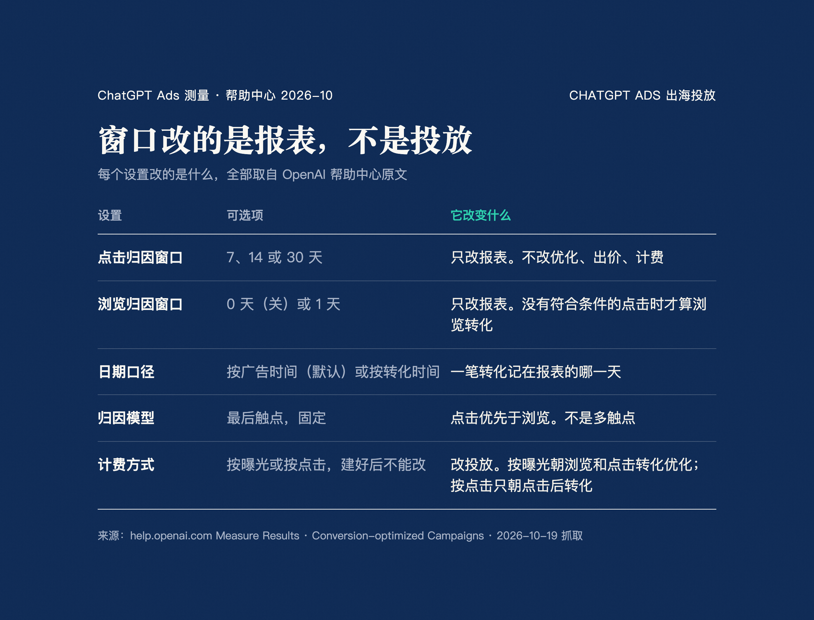

ChatGPT Ads 后台的归因窗口（点击后 7、14 或 30 天，另可开 1 天浏览归因）只改变报表算多少转化，不改变优化、出价和计费。决定投放方向的是计费方式。事件质量分是按数据源每天做的数据检查，不是效果预测。
三句话版
本页接着10 月 5 日更新解读，那篇提到了归因窗口和 EQS，没有展开。10 月 2 日到 17 日之间，OpenAI 更新了帮助中心五篇测量相关文档。下面的事实都出自这五篇和 OpenAI Ads Blog，用到处附链接。
帮助中心《Measure Results》列出了决定"转化"列数字的设置。计费方式出自《Conversion-optimized Campaigns》，放进来是因为只有它改变投放。
| 设置 | 可选项 | 改变什么 |
|---|---|---|
| 点击归因窗口 | 7、14 或 30 天 | 只改报表 |
| 浏览归因窗口 | 0 天（关）或 1 天 | 只改报表；没有符合条件的点击时才算浏览转化 |
| 日期口径 | 按广告时间（默认）或按转化时间 | 一笔转化记在哪一天 |
| 归因模型 | 最后触点，固定 | 点击优先于浏览；不是多触点 |
| 计费方式 | 按曝光或按点击，建好后不能改 | 改投放：活动朝什么转化优化 |
出处：Measure Results（约 2026-10-17 更新）、Conversion-optimized Campaigns（约 2026-10-02），2026-10-19 抓取。

点击窗口统计点击广告后 7、14 或 30 天内的转化。1 天浏览窗口再加上看到广告一天内的转化，前提是没有符合条件的点击。浏览窗口设为 0，报表就只剩点击转化。设置对报表里所有转化列同时生效，入口在 Edit columns → Conversion Events → Attribution windows。
官方写明该功能沿用"existing last-touch attribution logic"，不是多触点归因。同一笔转化，浏览和点击都符合条件时，记给点击。
默认按带来转化的那次点击或曝光的日期记。在 Edit columns 里选「Conversions (by conv. time)」，改为按转化发生当天记。和 CRM 对数时，这一项最常出问题。
不会。《Measure Results》原话：
“Changing the reporting window affects reporting only; it does not change campaign optimization, bidding, or billing.”
— OpenAI 帮助中心《Measure Results》，2026-10-19 抓取
同一个活动，30 天窗口显示的转化一定多于 7 天窗口，因为往回数得更远。改完窗口看到转化跳涨，是设置造成的，不是效果变了。
转化优化活动里，投放跟着计费走。按曝光计费为曝光付钱，朝"广告浏览和点击带来的转化"优化；按点击计费为有效点击付钱，只朝点击后的转化优化。官方的说法是“Selecting Clicks will lower your conversions.”。这是 OpenAI 对自家系统的判断，要在自己账户里验证。
常见路径是在 ChatGPT 里问完产品，离开，过后搜品牌或直接访问官网下单，只看点击的报表会漏掉。OpenAI Ads Blog 在 2026 年 10 月 5 日给过一个数：早期分析里，52.7% 的一日浏览转化发生在曝光后一小时内，口径是全球、以深漏斗结果为优化目标的活动。这是 OpenAI 的样本，不是某个账户的预测。
| 指标 | 大致延迟 |
|---|---|
| 曝光和点击 | 约每 15 分钟刷新 |
| 花费 | 滞后约 7–8 小时，点击可能先于花费出现 |
| 归因转化 | 约 24–48 小时，近期总数还会变 |
出处：Measure Results，2026-10-19 抓取。
EQS 按每个像素或数据源检查你回传的转化信息，规则在《Understand and improve event quality》。官方示例图满分 10 分，旁边列警告数、近期事件量和各匹配字段的覆盖率。
排查文档专门问了这一句，官方答“Not by itself.”。先确认近期真实动作有没有被记录，再按警告逐条查。官方同时提醒，不要为了提分多发事件、编造标识或改事件时间。
| 警告（官方名称） | 修复分组 |
|---|---|
| Limited email or customer ID information | 身份信息 |
| Limited additional matching information | 身份信息 |
| Ad click information is missing or cannot be connected | 点击参数（oppref） |
| Conversions API events are delayed | 时效 |
| Conversion matches need review | 去重与覆盖 |
| Many conversions are linked to the same ad interaction | 去重与覆盖 |
| Limited event types observed | 去重与覆盖 |
| Limited Pixel and Conversions API activity | 去重与覆盖 |
| Limited activity for a configured conversion goal | 去重与覆盖 |
警告名称出自《Understand and improve event quality》，2026-10-19 抓取；四个分组是我的归纳。
Conversions API 只接收"最近 7 天内、且不超过未来 10 分钟"的事件。官方另写一句：“This submission limit is separate from the attribution window.” 窗口开到 30 天，也传不进 20 天前的订单。
《Conversion Measurement》原话：“A difference does not necessarily indicate an error.” 对数之前先对齐五项：
| 对齐什么 | 原因 |
|---|---|
| 点击和浏览窗口 | 开了 1 天浏览归因，会多出只看点击的工具里没有的转化 |
| 日期口径 | 后台默认按广告互动日记，CRM 按下单日记 |
| 时区和日期范围 | 日界线不同，总数就不同 |
| 事件 | Order Created Sales 和 ROAS 只算 order_created 事件 |
| 范围 | 导入的 Google Analytics 4 总数含所有流量来源，不是归因转化 |
同时用 AppsFlyer、Adjust 这类归因伙伴的团队，把 ChatGPT Ads 的窗口设成和伙伴一致，两边才是同一套规则。
点击归因 7、14 或 30 天，浏览归因 0 天（关闭）或 1 天，可任意组合，对报表里所有转化列同时生效。
不会。官方说窗口只影响报表，不影响优化、出价和计费。投放方向由计费方式决定：按曝光计费朝浏览和点击转化优化，按点击计费只朝点击后转化优化。
不是，是最后触点。同一笔转化浏览和点击都符合条件时，记给点击。
按每个数据源对回传转化信息的检查，满分 10 分，每天按最近七个完整自然日刷新，附带要修的警告。它不预测活动效果。
官方答"本身不代表"。先确认近期真实动作有没有被正确记录，再按警告逐条查。不要为了提分多发事件或编造标识。
大约 24–48 小时，近期总数还会变。曝光和点击约 15 分钟刷新，花费滞后约 7–8 小时。
Stan Lu（鲁丙敖）· ChatGPT Ads 出海投放。写 ChatGPT 广告官方更新的中文解读，只用官方原文、报道、推断三栏出处。
栏目：ChatGPT Ads 更新解读 · 上一篇：10 月 5 日更新 · English
发布 2026-10-22 · 最后更新：2026-10-22